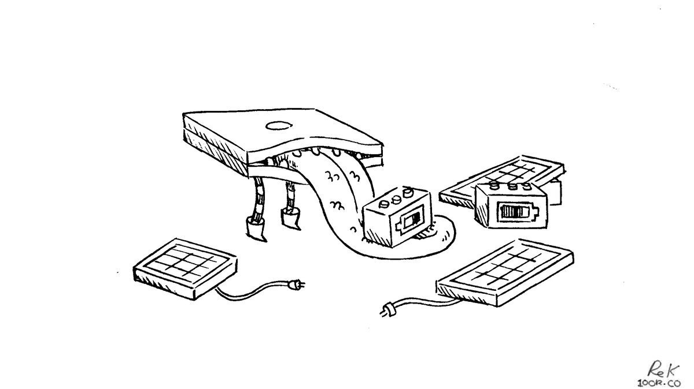

pino

Our sailboat is a Yamaha33, a 1982 masthead sloop fiberglass sailboat. Fully-geared, stocked with provisions for 4 months (food & water) Pino weighs 7484,274 kg (16,500 lbs), or 8.25 tons. Out of the factory, the boat was 4,400 kg (9,700.00 lbs), or 4.85 tons (about half that weight is ballast).
Pino moves from ship to shore with Teapot. Find out about our anchoring setup, and how much energy we have onboard.
The name comes from that of the android in the anime Ergo Proxy, while Hundred Rabbits is inspired from the name of the sailboat in that same show, the Centzon Totochtin.
Inventory:
where
Since 2016, Pino has travelled 22,912 nautical miles.
From 2016-2020 we circumnavigated the Pacific Ocean. We sailed from Western Canada to the US West coast, Mexico, French Polynesia, Cook Islands, Niue, Tonga, New Zealand, Fiji, The Marshall Islands, Japan and then back to Western Canada.
From 2020-2025 Pino has explored the Salish Sea, to see where we have been see Western Canada.
In 2024, Pino explored the North Coast of British Columbia, and US SE Alaska.
2016-2020 Pacific Route

View the interactive map for details.
energy
Our current solar setup
- Renogy 100-watt monocrystalline hard panel (in front of companionway)
- Renogy 100-watt monocrystalline hard panel (on mini-bini top)
- ProStar-15 Solar Controller
We have 2 solar panels(2 x 100 W). Our engine has a 75 A Balmar alternator, but it is only used to charge the house and starter batteries on cloudy days, which is not terribly often (last time was in 2020, while in the north pacific ocean. Generally, 200 W is enough to keep us powered throughout the day. We used to have a small Honda gas generator, but we sold it in 2020 (again, solar is enough).
We have a total of 464 Ah. We have lead-acid flooded-cell batteries. Our banks consist of a series configured starter bank (2x6 V Cells) and a series-parallel configured house bank (2x6 V cells). Both sets are identical, equalling 12 V each. Because they're identical, we often use both as house banks. If this is your planned usage, keep in mind that using both banks will mean that they will degrade together, and if they fail you'll be left with no power of any kind. This is a big risk to take. We keep an eye on our batteries, to make sure to replace them before they fail.
We don't have a windlass, pressure faucet, water heater or a fridge (see refrigeration). Because of this, it's easy to keep our power consumption low, reducing our need for extra solar, keeping our costs down and reducing the amount of things that can break, or fail.